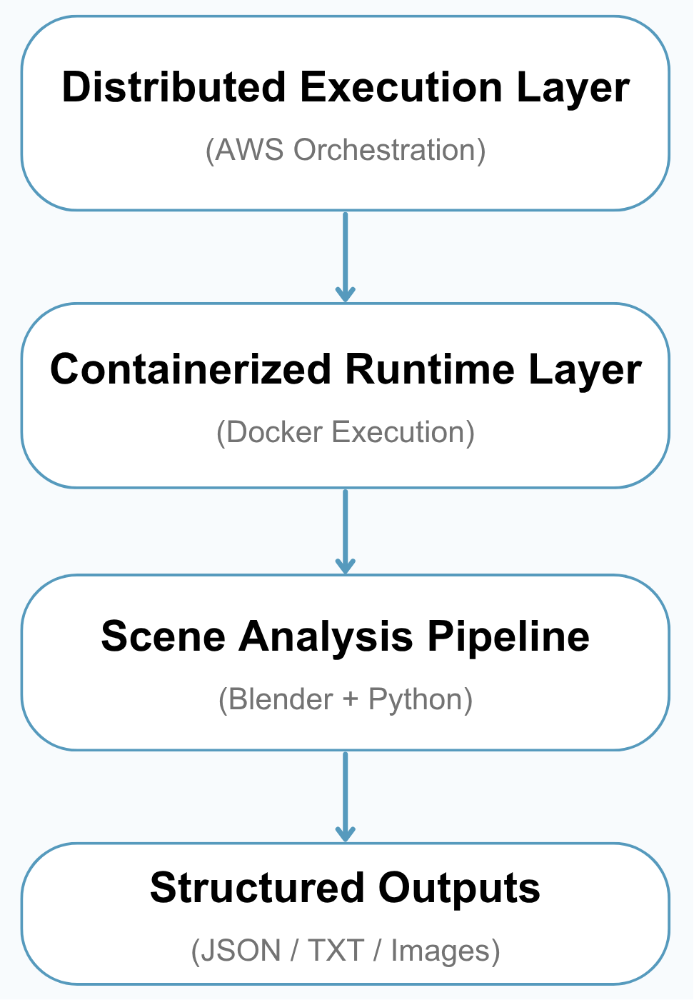
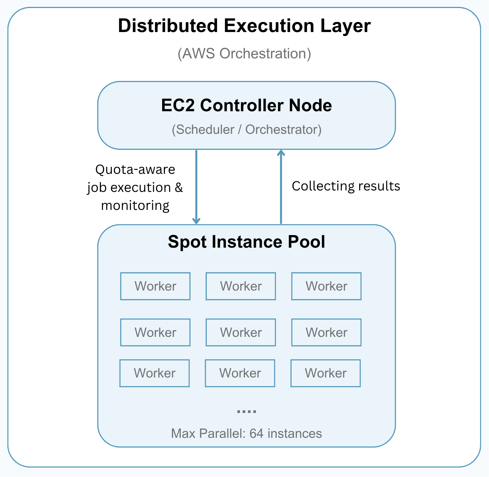
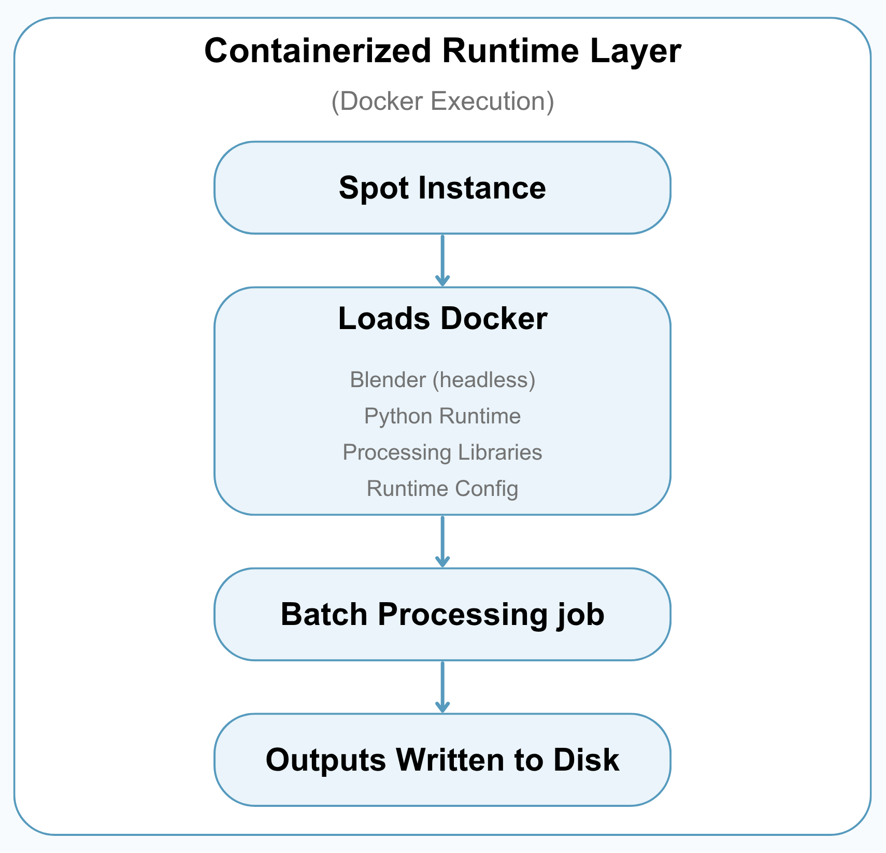
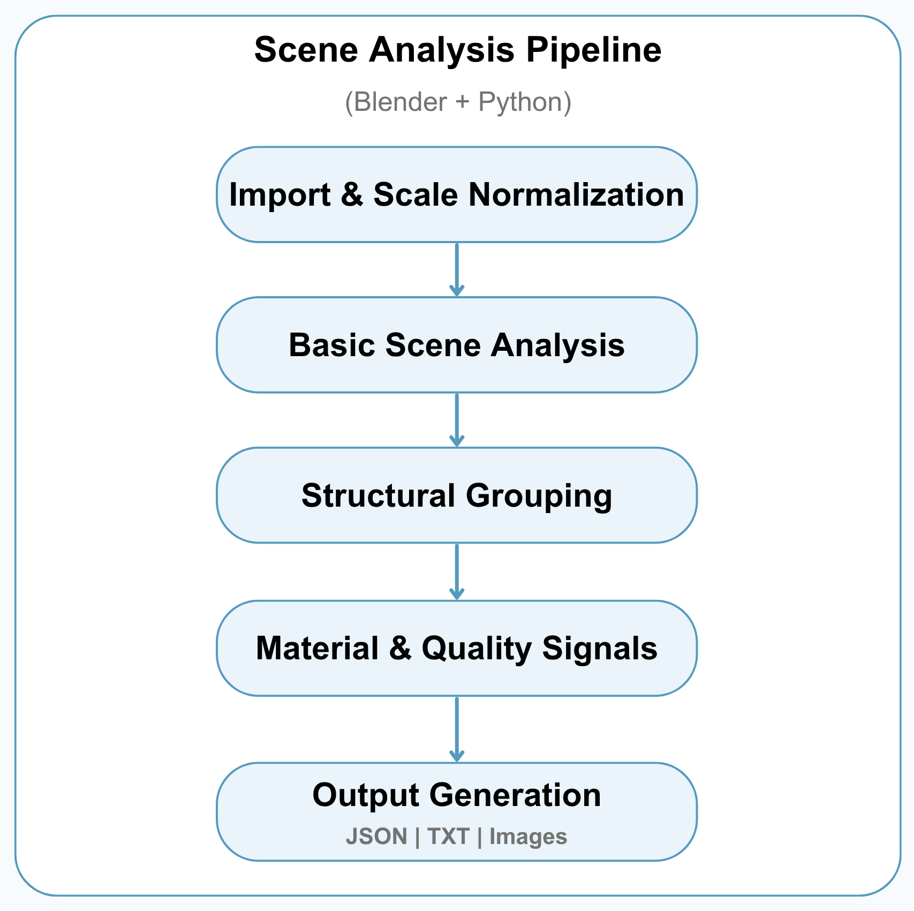

Distributed 3D Data Processing Pipeline
This page outlines the end-to-end pipeline used to process and analyze large-scale 3D data from Objaverse.
Overview
This page gives a high-level overview of the system used to process and analyze large-scale 3D data from Objaverse.
The pipeline takes many individual 3D assets, distributes the work across cloud machines, runs each job inside a consistent Docker environment, and produces structured metadata, tables, and diagnostic images for dataset analysis.

The system can be understood in three layers:
- Distributed Execution Layer — launches and manages cloud workers for large-scale processing
- Containerized Runtime Layer — keeps the software environment consistent using Docker
- Scene Analysis Pipeline — analyzes each 3D scene and converts it into useful metadata
Together, these layers make it possible to process hundreds of thousands of 3D assets in a scalable and recoverable way, without relying on one single machine to do all the work.
1. Distributed Execution Layer (AWS Orchestration)
This layer manages how large batches of 3D assets are split into smaller jobs and processed across AWS Spot instances.
A controller machine coordinates the overall run: it launches workers, assigns UID ranges, watches job progress, copies results back, and shuts workers down when they are finished. This allows the pipeline to scale horizontally while keeping cost and resource usage under control.

Key Capabilities
Cloud Job Orchestration
The dispatcher breaks the full dataset into smaller UID ranges and launches cloud workers to process those ranges independently.
Quota-Aware Scaling
The system checks active Spot requests and running instances before launching new workers, helping the run stay within available AWS vCPU capacity.
Parallel Processing
Multiple workers can run at the same time, so large batches of 3D assets can be processed much faster than running everything on a single machine.
Progress Monitoring
The controller tracks which jobs are queued, running, completed, or waiting for retry. It also writes a status file so long-running jobs can be monitored during execution.
Stall Detection
If a worker stops producing output for too long, the system treats it as stalled, stops the worker, and copies any available partial results before moving on.
Partial Result Recovery
Even when a job does not finish perfectly, available JSON, TXT, render, and error outputs are copied back to the controller. This helps preserve useful work and makes later validation or reruns easier.
Operational Controls
Long-running executions can be controlled without restarting the whole pipeline:
- Pause new launches
- Drain currently running jobs
- Resume processing later
Cost-Efficient Scaling Strategy
The pipeline was designed to work under constrained personal AWS Spot quotas by scaling across low-cost CPU-only instances rather than relying on a single powerful machine.
Concurrency is controlled by vCPU quota, active Spot capacity, and runtime configuration, allowing the system to increase throughput while avoiding unnecessary over-launching.
This approach makes the pipeline practical for large-scale processing while remaining cost-aware and recoverable when individual workers fail or stall.
2. Containerized Runtime Layer (Docker Execution)
This layer provides the software environment used by every cloud worker.
Instead of manually setting up Blender, Python, and dependencies on each machine, the pipeline uses a Docker image so every worker runs the same processing environment.

Why Docker
- Keeps the runtime environment consistent across workers
- Reduces machine-specific setup problems
- Makes batch jobs easier to launch, repeat, and debug
- Packages Blender, Python, and processing code into one deployable environment
Worker Runtime Setup
When a worker starts, it prepares the environment, pulls the Docker image, creates the output folders, and runs the assigned UID range inside the container.
Each worker writes structured outputs such as metadata files, tabular summaries, render images, and error records. These results are copied back to the controller before the worker is shut down.
Lightweight Execution Strategy
The runtime was designed for CPU-only batch execution, making it suitable for low-cost cloud instances. Memory limits and swap configuration help improve stability during large-scale processing.
By using Docker, the system keeps distributed execution portable and consistent, even when many temporary cloud machines are created and terminated during a run.
3. Scene Analysis Pipeline (Blender + Python)
This is the core analysis layer, where each 3D asset is opened in Blender and converted into structured metadata.
The pipeline examines each GLB file individually to understand its basic geometry, scene structure, material usage, and visual characteristics.

Pipeline Stages
1. Import & Scale Normalization
- Load each GLB file into Blender
- Normalize the scene scale so different assets can be analyzed consistently
Because 3D assets can be created at very different sizes, the pipeline first brings them into a common scale range before running structural checks.
2. Basic Scene Analysis
- Count objects, polygons, and vertices
- Identify common scene characteristics such as raw scans, animation or rigging, large planes, and environment-like enclosing geometry
This step creates a high-level profile of what each asset contains and helps identify scenes that may need special handling.
3. Structural Grouping
- Separate or group geometry based on connectivity and spatial relationships
- Treat special structures such as rigs, large planes, and environment shells as their own groups when detected
- Estimate how the scene is organized into structural components
This process is designed to provide useful structural metadata for dataset filtering and analysis. It is not intended to be perfect semantic labeling, but rather a scalable way to understand how each scene is organized.
4. Material & Quality Signals
- Detect whether the asset uses color materials, textures, transparency, or default materials
- Check topology-related signals such as watertightness
These signals help describe both the visual appearance and technical quality of each asset.
5. Output Generation
Each processed asset produces structured outputs for later review and dataset curation:
- JSON metadata with scene summary, structural grouping, and material mapping
- TXT/table rows for large-scale analysis
- Diagnostic images for visual inspection
Together, these outputs create a derived metadata layer that makes large 3D datasets easier to inspect, filter, and prepare for downstream machine learning workflows.
Conclusion
This pipeline transforms raw 3D assets into structured, analysis-ready metadata, making large-scale 3D datasets easier to inspect, filter, and curate.